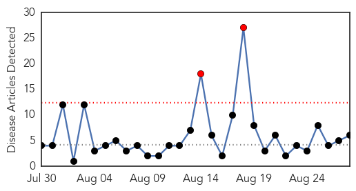
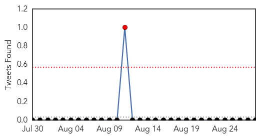
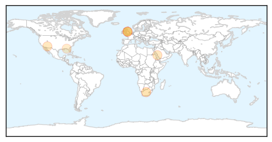
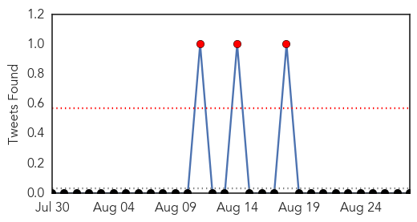
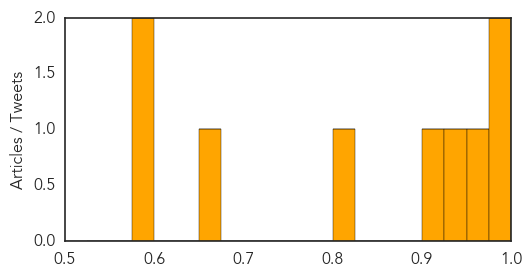

Meningitis
30-Day Web Trend
2 alerts, 0 warnings

30-Day Twitter Trend
0 alerts, 0 warnings

Article Locations
Article Confidences

Top Articles:
- 0.965
- Fever warning over new meningitis jab
- 0.937
- Parents in the East of England can get their babies vaccinated for MenB as of September
- 0.889
- Tuberculosis: Causes, Symptoms and Treatments
- 0.753
- New vaccine recommended for college-age teens
- 0.750
- Mecca & Pilgrimage l مكة والحج
- 0.612
- State Investigating Report of Viral Meningitis at Deane Bozeman School
Top Tweets:
-
No tweets found for Aug 28, 2015
Dengue Fever
30-Day Web Trend
0 alerts, 0 warnings

30-Day Twitter Trend
3 alerts, 0 warnings

Article Locations

Article Confidences
Top Articles:
- 0.994
- 14 more patients test positive for dengue
- 0.979
- CHP alerts public to high dengue activity in Taiwan
- 0.959
- RIMS sets off dengue alarm
- 0.947
- Italian marine down with dengue in capital
- 0.907
- Italian Marine, Diplomat Down With Dengue Fever
- 0.814
- More docs needed to fight dengue
- 0.662
- Dengue ends Tainan boycott feud
- 0.597
- Girone ill with dengue in India
- 0.580
- Horris Patten is the new Health Inspector for San Pedro
Top Tweets:
- 0.661
- Flavivirus news: 13 dengue cases reported from district - Chandigarh Tribune: 13 dengue cases r... http://t.co/kvn1G6wtyp pathogenposse